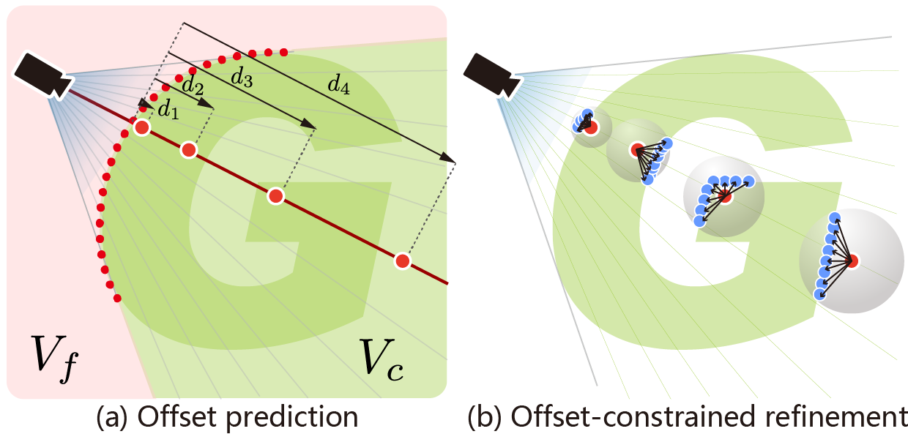
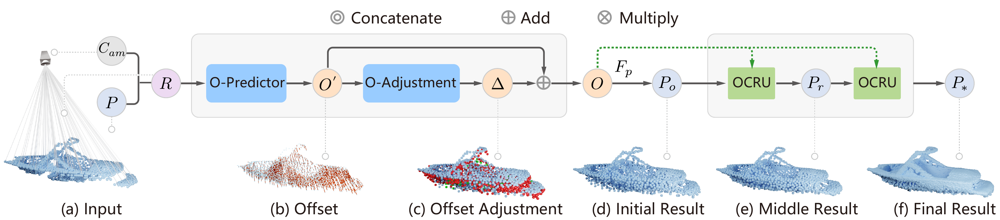
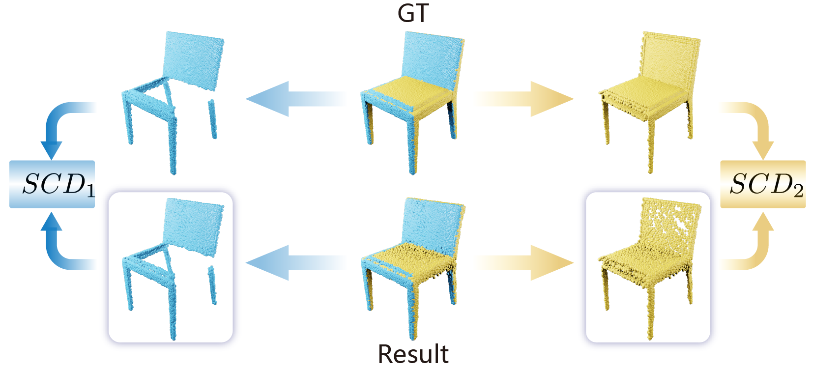
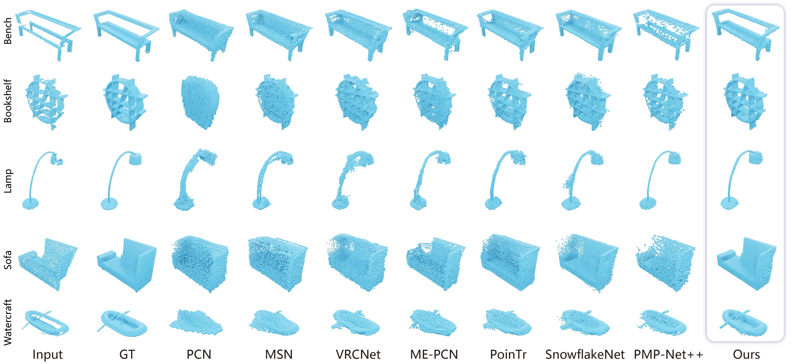

Shape Completion with Points in the Shadow
* Corresponding author

Abstract
Single-view point cloud completion aims to recover the full geometry of an object based on only limited observation, which is extremely hard due to the data sparsity and occlusion. The core challenge is to generate plausible geometries to fill the unobserved part of the object based on a partial scan, which is under-constrained and suffers from a huge solution space. Inspired by the classic shadow volume technique in computer graphics, we propose a new method to reduce the solution space effectively. Our method considers the camera a light source that casts rays toward the object. Such light rays build a reasonably constrained but sufficiently expressive basis for completion. The completion process is then formulated as a point displacement optimization problem. Points are initialized at the partial scan and then moved to their goal locations with two types of movements for each point: directional movements along the light rays and constrained local movement for shape refinement. We design neural networks to predict the ideal point movements to get the completion results. We demonstrate that our method is accurate, robust, and generalizable through exhaustive evaluation and comparison. Moreover, it outperforms state-of-the-art methods qualitatively and quantitatively on MVP datasets.
Fast Forward
Method
Our method considers the camera a light source that casts rays toward the object. We divide the whole space into two parts, the forbidden volume and the shadow volume. The forbidden volume is the spatial area where completion cannot happen; instead, the partial point cloud should be completed within the shadow volume. To achieve this, we formulate the completion process as a point displacement problem.
Camera as a light source
Rays from the camera through observed points bound where missing geometry can lie.
Move along rays
Multiple points are placed on each observed point and pushed along its ray as an initial guess.
Constrained local moves
Each point is split into several and refined within a constrained local neighborhood.
The network includes two main modules: the offset prediction module and the offset-constrained refinement. Given the camera location and partial scan as input, the offset prediction module predicts the movement along rays, and the offset-constrained refinement module estimates the local movement.


New Metric: Split Chamfer Distance
Chamfer distance, F-Score and density-aware chamfer distance are indiscriminative between the visible and missing parts of a shape, so they lack the granularity to tell where a completion succeeds or fails. We propose the split chamfer distance (SCD), which consists of two values:
Evaluates the completion quality of the visible part.
Evaluates the completion quality of the missing part.

Completion Results
We compare our completion results with other methods. In general, our results are cleaner and retain more geometric details from the partial scan.


Data & Code
The source code and data used in this paper are publicly available.
zhangbowen-wx / Shape-Completion-with-Points-in-the-Shadow Official implementation · GitHubBibTeX
@inproceedings{zhang2022shape, title = {Shape Completion with Points in the Shadow}, author = {Zhang, Bowen and Zhao, Xi and Wang, He and Hu, Ruizhen}, booktitle = {SIGGRAPH Asia 2022 Conference Papers}, pages = {1--9}, year = {2022} }
Acknowledgements
This work was supported in part by National Natural Science Foundation of China (62072366, 61872250), Key R&D project of Shaanxi Province (2021QFY01-03HZ), China Postdoctoral Science Foundation Funded Project (2020M673407), Guangdong Natural Science Foundation (2021B1515020085) and Shenzhen Science and Technology Program (RCYX20210609103121030).